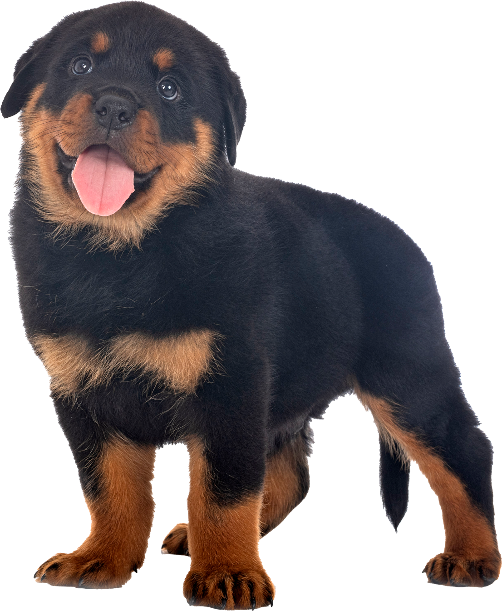

Adoptér en ven for livet
Alle vores hunde leder efter nogen de kan tilbringe hele ders liv hos. Om du er pensionist eller studerende kan vi hjælpe dig med at finde den hund der passer til dig og din livsstil.
Mød vores hunde
Historier fra andre dyreejere
Læs historier om hvordan internatet har været med til at give hunde en anden chance til at være en vigtig del af familier i hele landet. Men det er ikke kun os der synes det - læs også historier vores brugere har slået op om alt fra deres adoptionsrejse til hvordan de har lært at blive gode dyreejere.